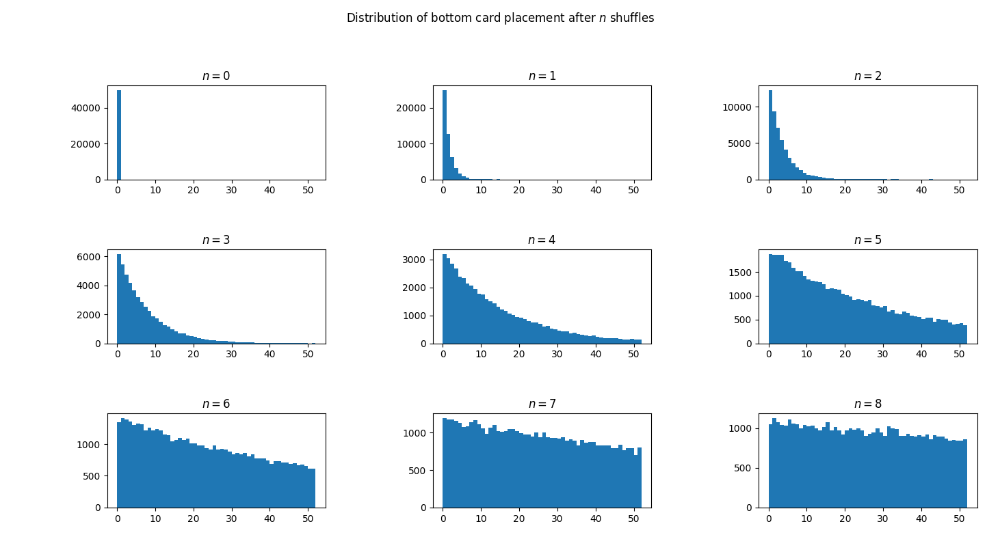

Quick Links
College notes (Autumn Stage 4)
Projects
Chess Engine Project ("Engie")
Updates and Points of Interest
17/09/2024 Card Shuffling Simulation
I simulated shuffling a deck of cards using the Gilbert-Shannon-Reeds model and found some interesting results. Though the paper recommends seven riffle shuffles generally being enough, I simulated 50,000 decks and found that the card initially on the bottom of the deck had a 52% chance of still being in the lower half of the deck after seven riffles.
No amount of riffle shuffling can ever fully eliminate the 'traces' of the original deck.Further analysis to be done:
- Through simulation or analysis, find a 52x52 matrix that shows how likely each card is to end up in each other positions after a riffle. Exponentiating this matrix could give a picture of how likely a card is to be in certain parts of the deck, a useful tool for analysis.
- Consider the effect of larger decks of cards. How many shuffles are needed?
16/09/2024 Podcast Published with UCD on AI in Education
Back in April I had the privilege of joining two peers, Thomas Doyle and Tara Cullinane, in a studio in UCD to record a 30 minute podcast about the future of AI in education. The podcast finally went public today and you can hear it on UCD's website (episode 1: Closed Book Exams).Huge thanks to Eoin Ryan and Cathal Ó Gréagóir who researched, wrote, and produced the show with us, and to Jennifer Keenahan and Mairáad O'Reilly who spearheaded the initiative. I had an amazing time and would probably consider recording more podcasts in future.